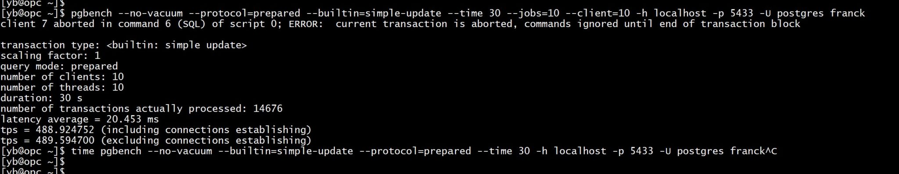

This was first published on https://www.dbi-services.com/blog/yugabytedb-2-1/ (2020-03-08)
Republishing here for new followers. The content is related to the versions available at the publication date.
.
9 months ago I was looking at YugaByteDB which was still in beta version for its ‘YSQL’ API. I published my first test on Medium: https://medium.com/@FranckPachot/running-pgbench-on-yugabytedb-1-3-3a15450dfa42. I have been very enthusiastic about the idea, the architecture, the way they open-sourced it and how all was documented in their blog. I’ve even met them in Sunnyvale when I traveled to California for Oracle Open World. Great people with a great vision on the future of databases. From this first test, I was not impressed by the performance but it was an early beta and a multi-master/multi-index database has many challenges to solve before tuning the details of implementation. This tuning task has been done for the General Availability version 2.1 released in February. I was eager to test it, but this first month back to dbi-services consulting was very busy. So finally here it is.
This post takes the same test I did last July and the result is impressive: the pgbench initialization time is fully fixed and the pgbench run shows 9x higher throughput.
I’m on the same VM which, as funny as it might sound, is an Oracle Linux 7 running on the Oracle Cloud.
I install this version 2.1 in the same way I installed the 1.3 in the past. All is documented: https://docs.yugabyte.com/latest/quick-start/install/linux/
wget -O yugabyte-2.1.0.0-linux.tar.gz https://downloads.yugabyte.com/yugabyte-2.1.0.0-linux.tar.gz
tar -xzvf yugabyte-2.1.0.0-linux.tar.gz
yugabyte-2.1.0.0/bin/post_install.sh
export PATH="~/yugabyte-2.1.0.0/bin:~/yugabyte-2.1.0.0/postgresql/bin:$PATH"
I create a 3 nodes cluster with replication factor 3, with all nodes in the same host for this test:
yb-ctl --rf 3 create
yb-ctl status
I create database for this:
ysqlsh
\timing on
drop database if exists franck;
create database franck;
\q
I use pgbench that I have from a “normal” PostgreSQL installation on the same server.
[opc@db192 ~]$ type pgbench
pgbench is hashed (/usr/pgsql-11/bin/pgbench)
time pgbench --initialize --host localhost -p 5433 -U postgres franck
If you compare with the previous post on version 1.3 you will see many differences.
However the “ALTER TABLE” to add the constraints afterward is still not supported so I run the same manually with the FOREIGN KEY declaration in the CREATE TABLE:
ysqlsh franck
drop table if exists pgbench_history;
drop table if exists pgbench_tellers;
drop table if exists pgbench_accounts;
drop table if exists pgbench_branches;
CREATE TABLE pgbench_branches (
bid integer NOT NULL
,bbalance integer
,filler character(88)
,CONSTRAINT pgbench_branches_pkey PRIMARY KEY (bid)
);
CREATE TABLE pgbench_accounts (
aid integer NOT NULL
,bid integer references pgbench_branches
,abalance integer
,filler character(84)
,CONSTRAINT pgbench_accounts_pkey PRIMARY KEY (aid)
);
CREATE TABLE pgbench_tellers (
tid integer NOT NULL
,bid integer references pgbench_branches
,tbalance integer
,filler character(84)
,CONSTRAINT pgbench_tellers_pkey PRIMARY KEY (tid)
);
CREATE TABLE pgbench_history (
tid integer references pgbench_tellers
,bid integer references pgbench_branches
,aid integer references pgbench_accounts
,delta integer
,mtime timestamp without time zone
,filler character(22)
);
\q
Now remains to insert the rows there. This was very long (about an hour) in 1.3:
time pgbench --initialize --init-steps=g -h localhost -p 5433 -U postgres franck
No foreign key error and 6 seconds only!
Do you remember that I had to switch to SERIALIZABLE isolation level? I don’t have to here:
This has been fixed with the support of SELECT locks, so no need to go to optimistic locking with SERIALIZABLE (which requires that the application implements a ‘retry’ logic).
Then, as I did before, I run a Simple Update workload from one session during 30 seconds:
pgbench --no-vacuum --builtin=simple-update --protocol=prepared --time 30 -h localhost -p 5433 -U postgres franck
When compared with the previous run on 1.3 I’ve updated 9x more transactions. Yes, that’s exactly what has been announced for this version: huge performance imprevements:
What we've been up to over the last few month – YugabyteDB 2.1 has a ton of perf improvements and a lot of other goodies! https://t.co/wwwhVG7bPd
PS: Please do give it a spin, would love your feedback.
— Karthik Ranganathan (@karthikr) February 25, 2020
Then, as I did before I’m running with 10 concurrent threads
pgbench --no-vacuum --protocol=prepared --builtin=simple-update --time 30 --jobs=10 --client=10 -h localhost -p 5433 -U postgres franck
Again, that 7x better than my test on 1.3 and still in read commited isolation level.
Note that I was lucky here but it can happen that we get a serialization error even in read commited like in this second run of the same: 
The community implementation of pgbench has no retry logic. Once an error is enountered the thead finishes, and that’s unusable for a benchmark. The patch proposed many times was, unfortunately, always rejected: https://commitfest.postgresql.org/18/1645/.
But YugaByteDB has a solution for that, which I’ll show in the next post: https://www.dbi-services.com/blog/ysql_bench/
{kind=link}
{kind=link}
{kind=link}
{kind=link}
{kind=link}
{kind=link}
{kind=link}
{kind=link}